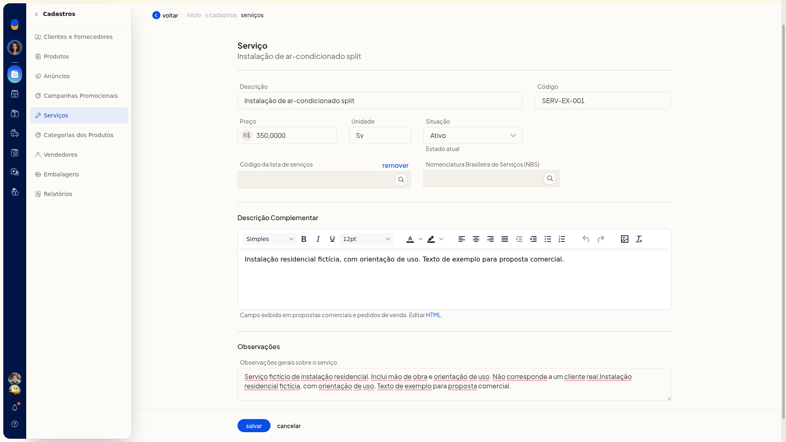
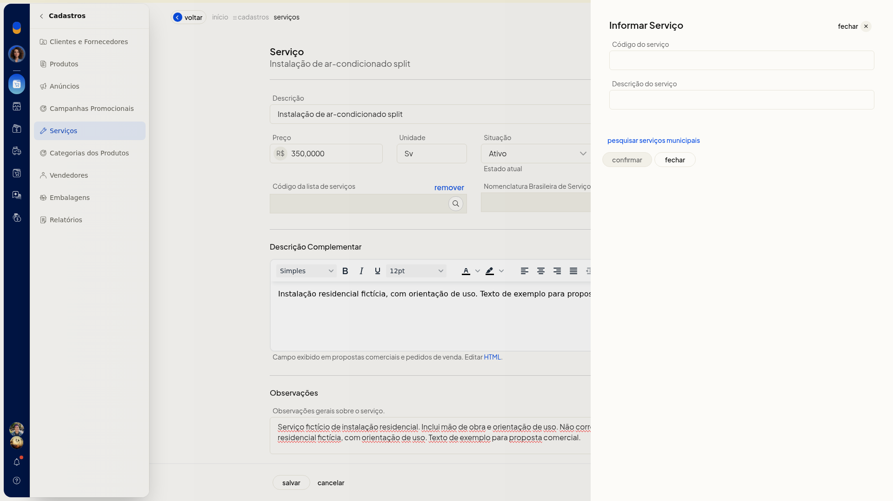
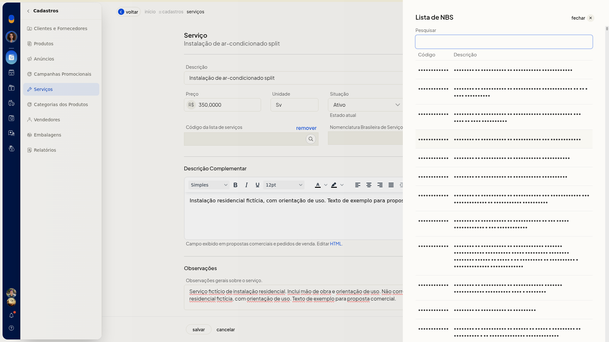
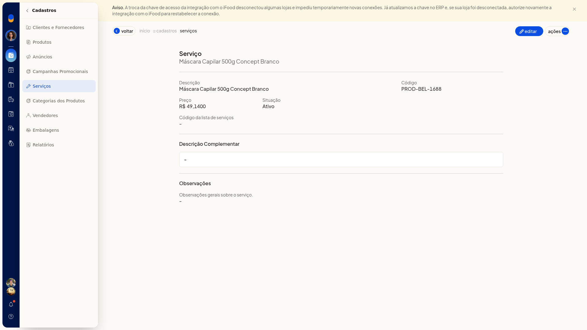
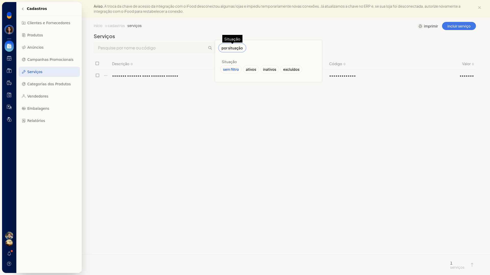
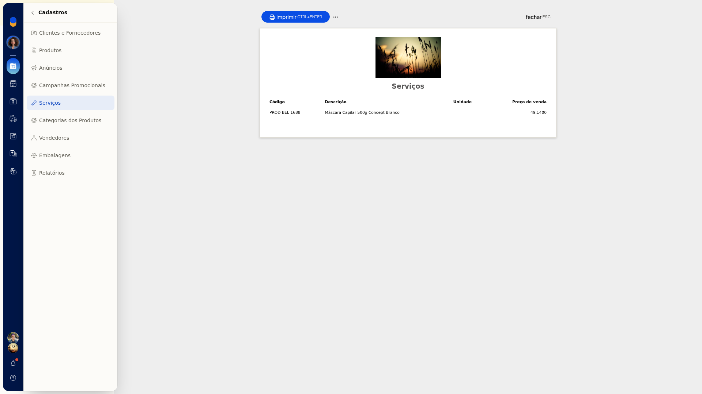
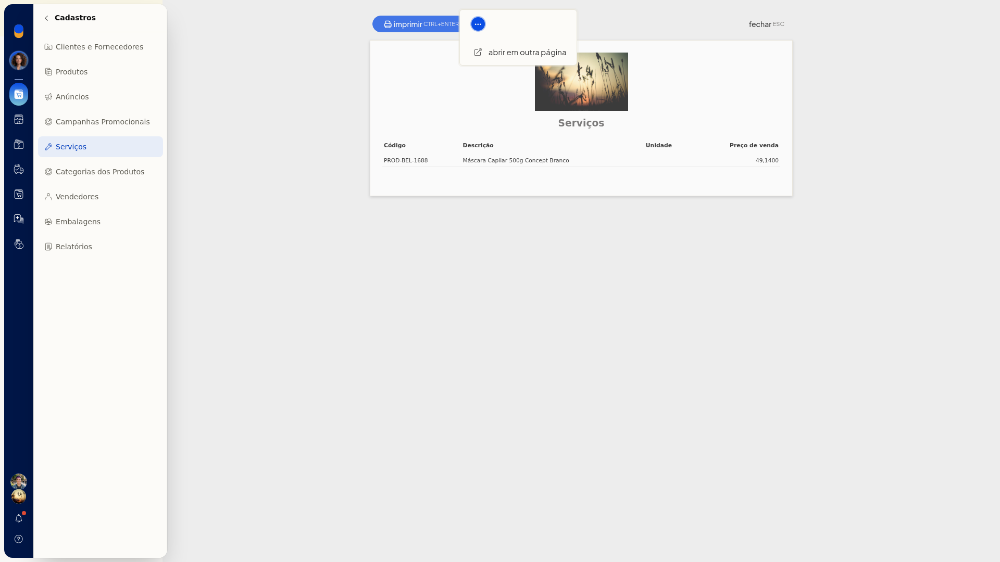

Ordens de serviço
No cadastro de serviços do ERP da Olist, você registra os serviços que a empresa comercializa ou executa. Em Cadastros > Serviços, você inclui um serviço, consulta e edita um já existente, clona um cadastro, pesquisa e filtra a lista, imprime a relação e, com itens marcados, exclui serviços ou os transforma em produtos.
Importante
- Nenhum campo do formulário é obrigatório.
- Excluir serviço e Transformar em produtos só aparecem na barra inferior depois que você marca ao menos um serviço.
- Para transformar serviços em produtos, a conta também precisa poder cadastrar produtos e alterar serviços.
- Se Editar, Excluir serviço ou Transformar em produtos não aparecerem, peça acesso ao administrador da conta.
Instruções
Incluir um serviço
-
Acesse Cadastros > Serviços.

-
Clique em Incluir serviço.

-
Preencha Descrição, Código, Preço, Unidade e Situação. Em Situação, escolha Ativo ou Inativo. Ativo já vem selecionado. Em Preço, informe o valor em reais (R$).

-
Se quiser, em Código da lista de serviços, busque em Pesquisar Serviços por código ou nome, ou informe o código no diálogo Informar Serviço, nos campos Código do serviço e Descrição. Não é necessário concluir a seleção. Com código informado, Remover limpa o campo.



-
Se quiser, pesquise a Nomenclatura Brasileira de Serviços (NBS) por código ou descrição.

-
Se quiser, escreva a Descrição Complementar. No editor, clique em Editar HTML e depois em Aplicar ou Cancelar. Preencha Observações se precisar registrar notas gerais sobre o serviço.

-
Clique em Salvar para gravar o serviço. Cancelar fecha o formulário sem gravar.
Consultar e editar um serviço
-
Na listagem, clique na linha do serviço. A ficha abre somente leitura, com Voltar, Editar e Ações.

-
Clique em Editar. Ajuste Descrição, Código, Preço, Unidade, Situação, Código da lista de serviços, Nomenclatura Brasileira de Serviços (NBS), Descrição Complementar e Observações. Em Código da lista de serviços, use Remover se houver código informado.

-
Clique em Salvar para gravar as alterações. Cancelar volta à ficha somente leitura sem gravar.
Clonar um serviço
-
Na listagem, abra o menu da linha (reticências) e clique em Clonar serviço. Outro caminho: abra o serviço, clique em Ações e depois em Clonar serviço.


-
Revise o formulário. Os dados do serviço de origem vêm preenchidos, o Código fica em branco e a Situação permanece Ativo. Ajuste o que for necessário.

-
Clique em Salvar para gravar o novo serviço. Cancelar descarta o formulário e volta à listagem sem gravar.
Pesquisar e filtrar a listagem
-
Em Cadastros > Serviços, use o campo Pesquise por nome ou código.
-
Clique em por situação e escolha Sem filtro, Ativos, Inativos ou Excluídos. Use limpar filtros para remover o filtro.

Imprimir a relação
-
Na listagem, clique em Imprimir.
-
Confira a pré-visualização, com as colunas Código, Descrição, Unidade e Preço de venda.

-
Em Mais ações, clique em Abrir em outra página se quiser abrir a relação em outra página. Fechar encerra a pré-visualização sem imprimir.

Excluir serviços
-
Na listagem, marque a caixa de seleção de um ou mais serviços. A barra inferior mostra a quantidade selecionada, Excluir serviço e Transformar em produtos.

-
Clique em Excluir serviço.
Transformar serviços em produtos
- Na listagem, marque a caixa de seleção de um ou mais serviços.
- Na barra inferior, clique em Transformar em produtos.
Resultado
A listagem de Serviços mostra as colunas Descrição, Código e Valor. Ao clicar na linha, a ficha abre somente leitura. Cancelar na edição volta à ficha sem gravar, e Cancelar na clonagem volta à listagem sem gravar. Imprimir abre a pré-visualização, e Fechar a encerra sem imprimir.
Informações adicionais
- No menu Ações da ficha, a opção exibida é Clonar serviço.
- A clonagem inicia um cadastro novo com os dados copiados e o Código vazio, para você revisar antes de salvar.